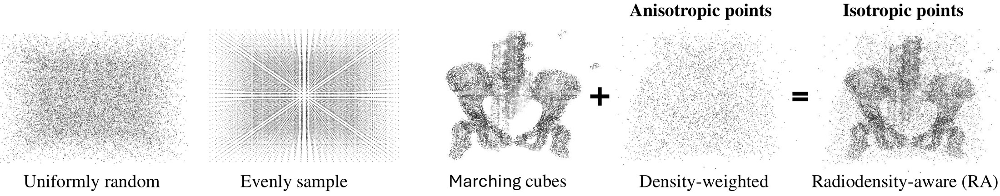
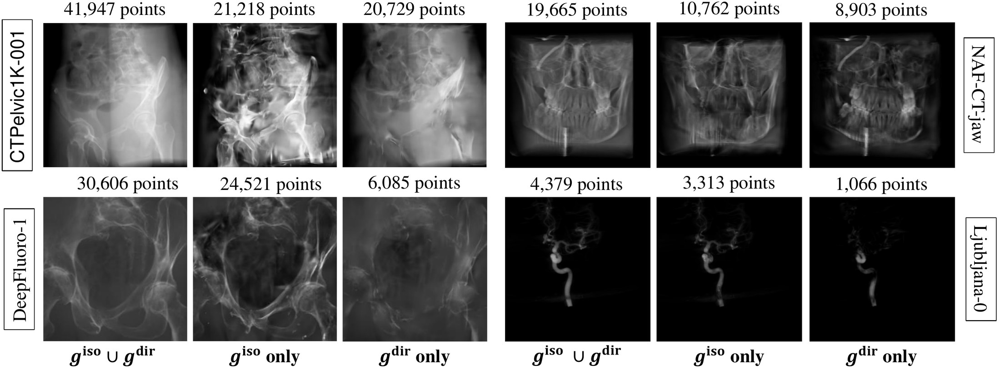
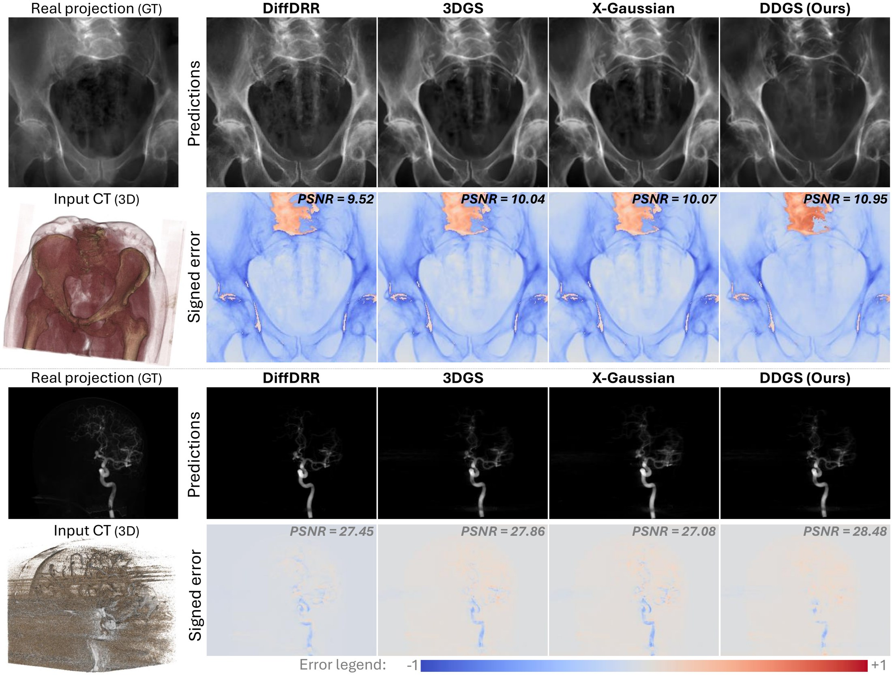
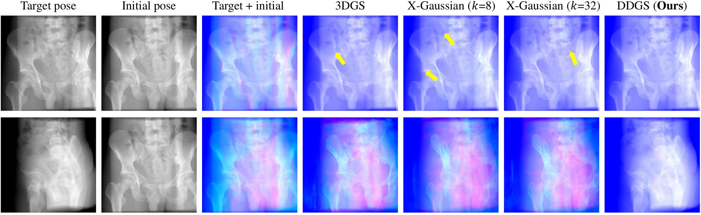

Digitally reconstructed radiographs (DRRs) are simulated 2D X-ray images generated from 3D CT volumes, widely used in preoperative settings but limited in intraoperative applications due to computational bottlenecks, especially for accurate but heavy physics-based Monte Carlo methods. While analytical DRR renderers offer greater efficiency, they overlook anisotropic X-ray image formation phenomena, such as Compton scattering.
We present a novel approach that marries realistic physics-inspired X-ray simulation with efficient, differentiable DRR generation using 3D Gaussian splatting (3DGS). Our direction-disentangled 3DGS (DDGS) method separates the radiosity contribution into isotropic and direction-dependent components, approximating complex anisotropic interactions without intricate runtime simulations. Additionally, we adapt the 3DGS initialization to account for tomography data properties, enhancing accuracy and efficiency.
Our method outperforms state-of-the-art techniques in image accuracy. Furthermore, DDGS shows promise for intraoperative applications and inverse problems such as pose registration, delivering superior registration accuracy and runtime performance compared to analytical DRR methods.
Scattering cannot be traced inside a splatting renderer, but its anisotropic effect on the X-ray image can be learned. DDGS gives that effect its own Gaussians instead of forcing it into the same primitive as the isotropic attenuation.
Isotropic Gaussians model photoelectric absorption and Rayleigh-like effects. A separate set of direction-dependent Gaussians models Compton-like scattering. Relaxing the usual co-location of the two gives higher quality with fewer points.
Marching cubes places points on material interfaces, where photon transport is discontinuous. Radiodensity-weighted voxel sampling adds points inside homogeneous tissue. The two sets seed the isotropic and directional Gaussians.
ciiso = sigmoid( biso · fiiso )
cjdir = sigmoid( Y1..L(θ,φ) · Bdir fjdir )
biso is a global isotropic basis and Bdir an anisotropic basis applied to the ray's spherical decomposition without its constant term. When only scatter-free DRRs are available, the model degrades gracefully to the lighter isotropic form.

Initialization strategies. Uniform and even sampling ignore anatomy; RADS combines marching-cubes interface points with radiodensity-weighted interior points.

Rendering each set alone. The direction-dependent Gaussians concentrate on bone and anatomy, while the isotropic set carries the background.
NAF-CT uses scatter-free TIGRE projections. CTPelvic1K uses DeepDRR, which simulates scattering, so it tests realistic X-ray formation. DDGS is best on both, and uses the fewest points on CTPelvic1K.
| Dataset (average) | 3DGS (L=1) | X-Gaussian (k=32) | DDGS (Ours, L=1, k=8) | ||||||
|---|---|---|---|---|---|---|---|---|---|
| #points↓ | PSNR↑ | SSIM↑ | #points↓ | PSNR↑ | SSIM↑ | #points↓ | PSNR↑ | SSIM↑ | |
| NAF-CT4 scans · scatter-free | 12,834 | 44.21 | 0.985 | 15,149 | 43.72 | 0.984 | 14,478 | 44.47 | 0.986 |
| CTPelvic1K10 scans · with scatter | 48,183 | 37.47 | 0.980 | 47,396 | 38.04 | 0.983 | 42,625 | 39.08 | 0.986 |
Per-scan results are in the paper. A CTPelvic1K scan needs about 0.8M floats in DDGS against 93M voxels in the original CT.
| CTPelvic1K scan (PSNR / SSIM) | DDGS (Ours) | Entangled | Isotropic only | Directional only | 3DGS-disentangled |
|---|---|---|---|---|---|
001 | 38.04 / 0.984 | 36.17 / 0.977 | 35.93 / 0.976 | 32.48 / 0.942 | 35.32 / 0.971 |
002 | 38.30 / 0.987 | 37.32 / 0.984 | 36.96 / 0.983 | 33.04 / 0.953 | 35.38 / 0.973 |
"Entangled" puts both components in the same Gaussians. RADS initialization also beats uniform and even sampling, most clearly early in training: 28.15 vs 26.84 and 26.09 dB at 500 iterations.
DRRs compared with real, posed projections from DeepFluoro (pelvis) and Ljubljana (neurovascular angiography). DDGS has the highest PSNR on both.

Because DDGS renders fast and is differentiable, it can drive pose estimation directly. It converges to the target pose where other Gaussian DRR renderers leave misaligned structures (yellow arrows).

| Ljubljana | DRR render time (ms)↓ | Total optimization (s)↓ | TRE (mm)↓ | ||||||
|---|---|---|---|---|---|---|---|---|---|
| mean | med | std | mean | med | std | mean | med | std | |
| DiffDRR | 30.88 | 31.51 | 3.25 | 431.98 | 316.54 | 261.70 | 2.14 | 0.72 | 5.40 |
| DDGS (Ours) | 7.46 | 6.94 | 2.67 | 121.45 | 39.93 | 117.67 | 0.80 | 0.65 | 0.51 |
TRE = target registration error on clinical landmarks. On CTPelvic1K, DDGS also has the lowest translation error on all three tested scans (1.09–2.18 mm).
@inproceedings{gao2024ddgs,
title = {DDGS-CT: Direction-Disentangled Gaussian Splatting for Realistic Volume Rendering},
author = {Gao, Zhongpai and Planche, Benjamin and Zheng, Meng and
Chen, Xiao and Chen, Terrence and Wu, Ziyan},
booktitle = {Advances in Neural Information Processing Systems (NeurIPS)},
year = {2024}
}